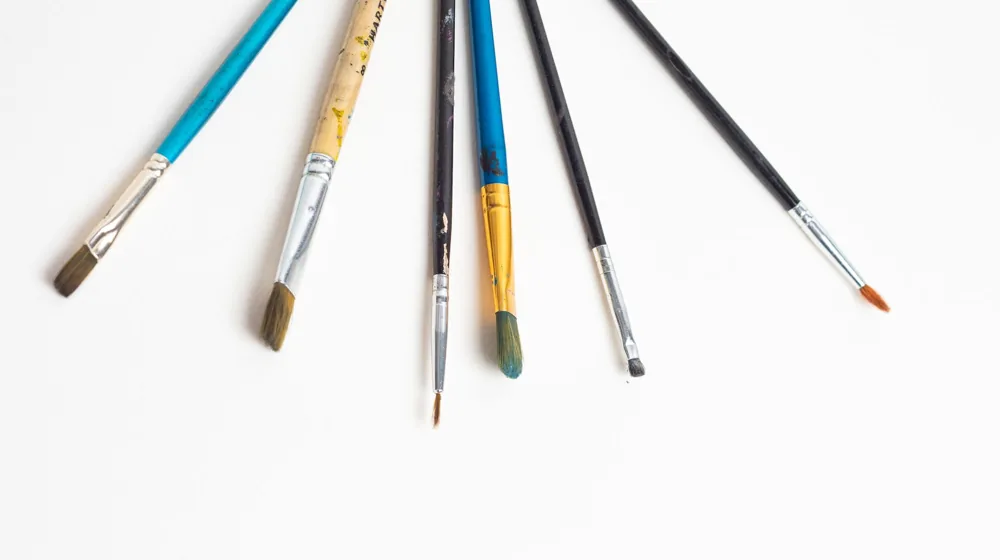

한지 공예, 처음이라면? 필수 준비물부터 첫 작품까지 쉽게 시작하기
사진: ANTONI SHKRABA production / Pexels (무료 이미지, 출처 표기)
한지 공예에 대한 막연한 환상이 있지만, '나도 할 수 있을까?' 하는 걱정으로 선뜻 시작하지 못하고 계셨나요? 아름다운 전통 한지를 활용해 나만의 작품을 만드는 한지 공예는 생각보다 어렵지 않습니다. 이 글에서는 초보자들이 궁금해할 필수 준비물부터 첫 작품으로 도전하기 좋은 아이템, 그리고 실패 없이 작품을 완성하는 실용적인 팁까지 한 번에 정리해드립니다.

한지 공예, 먼저 알아야 할 기초 상식
한지 공예는 우리나라 고유의 전통 종이인 한지를 활용하여 다양한 생활 소품이나 예술 작품을 만드는 것을 말합니다. 단순한 종이접기를 넘어, 여러 기법을 통해 입체적인 형태를 만들거나 표면을 장식하는 작업이 포함됩니다.
이 분야에서는 몇 가지 용어를 미리 알아두면 좋습니다. '지호'는 한지를 잘게 찢어 풀과 섞어 반죽처럼 만든 후 형태를 빚는 기법을, '지승'은 한지를 꼬아 만든 끈으로 기물을 만드는 기법을 뜻합니다. 주로 초보자가 접하는 '지장'은 여러 겹의 한지를 붙여 견고한 형태를 만드는 기법을 일컫습니다.
초보자를 위한 한지 공예 필수 준비물 리스트
한지 공예를 시작하기 위해 거창한 도구가 필요한 것은 아닙니다. 대부분의 재료는 문구점이나 대형 마트, 온라인 공예 전문점에서 쉽게 구할 수 있습니다. 다음은 초보자가 준비하면 좋을 필수 준비물입니다.
- **한지:** 각 작품에 맞는 색상과 두께, 문양을 가진 한지가 필요합니다.
- **전용 풀:** 한지 전용 풀, 지물용 풀 또는 끈적임이 적고 건조 후 투명해지는 풀을 선택하세요.
- **칼 및 가위:** 한지를 정교하게 자르고 재단하는 데 사용합니다.
- **풀솔 또는 붓:** 풀을 고르게 바르는 데 필수적입니다.
- **자:** 정확한 길이와 각도를 측정하여 재단할 때 유용합니다.
- **건조대 또는 작업판:** 작품을 고정하고 건조하는 데 필요합니다.
- **마감재:** 작품의 내구성을 높이고 방수 및 방습 효과를 주는 바니시 등이 있습니다.
특히 풀은 한지 공예의 핵심 재료이므로, 전용 풀이나 끈적임이 적고 건조 후 투명해지는 지물용 풀을 선택하는 것이 좋습니다. 일반 딱풀은 건조 후 떨어질 수 있어 권장하지 않습니다.
처음 시작하기 좋은 쉬운 한지 공예 작품 추천
처음부터 복잡한 작품에 도전하기보다는 작고 간단한 생활 소품부터 시작하여 손에 익숙해지는 시간을 갖는 것이 중요합니다. 다음은 초보자들이 쉽게 도전하고 완성하며 성취감을 느낄 수 있는 작품들입니다.
- **한지 연필꽂이:** 사각형이나 원형 골격에 한지를 붙여 만드는 가장 기본적인 작품입니다. 여러 색상과 문양의 한지를 조합하며 디자인 감각을 키울 수 있습니다.
- **작은 보석함/정리함:** 종이 상자 골격에 한지를 붙여 만드는 방식으로, 곡선이나 모서리 처리 연습에 좋습니다. 마감재를 잘 바르면 실용적인 수납함이 됩니다.
- **한지 쟁반 또는 컵받침:** 평평한 판 위에 한지를 붙여 만드는 방식으로, 풀칠과 건조 과정을 이해하는 데 도움이 됩니다. 선물용으로도 좋습니다.
이러한 작품들은 시중에서 판매하는 기본 골격이나 반제품 키트를 활용하면 훨씬 쉽게 시작할 수 있습니다. 2026년 11월 기준, 다양한 디자인의 키트를 온라인에서 찾아볼 수 있습니다.
한지 공예 재료, 현명하게 고르는 팁
한지 공예 작품의 완성도는 재료 선택에서 크게 좌우됩니다. 특히 한지는 종류가 다양하므로, 만들고자 하는 작품의 용도와 디자인에 맞춰 적절한 것을 고르는 지혜가 필요합니다.
풀의 경우, 초보자는 건조가 빠르고 투명하게 마르는 '지물용 풀'이나 '도배용 풀'을 추천합니다. 전통 방식을 선호한다면 찹쌀풀이나 밀가루풀을 직접 쑤어 사용할 수도 있으나, 풀의 농도 조절이 중요합니다.
실패를 줄이는 한지 공예 초보자 주의사항
누구나 처음에는 실수를 하기 마련입니다. 하지만 몇 가지 주의사항만 염두에 둔다면 초보자도 만족스러운 한지 공예 작품을 만들 수 있습니다.
- **풀 농도 조절:** 풀이 너무 묽으면 한지가 쭈글거리고, 너무 되직하면 잘 붙지 않거나 뭉칩니다. 물을 조금씩 섞어가며 적당한 농도를 찾아야 합니다.
- **기포 및 주름 제거:** 한지를 붙일 때는 풀솔이나 마른 천으로 안에서 바깥으로 부드럽게 밀어 기포나 주름이 생기지 않도록 합니다.
- **충분한 건조 시간:** 풀칠 후에는 완전히 마를 때까지 충분한 시간을 두고 건조해야 합니다. 습한 곳은 피하고, 통풍이 잘 되는 그늘에서 말리는 것이 좋습니다. 성급하게 다음 작업을 진행하면 작품이 손상될 수 있습니다.
- **깔끔한 마감:** 작품의 완성도를 높이는 것은 바로 깔끔한 마감입니다. 테두리나 모서리 부분을 정교하게 다듬고, 마감재를 고르게 바르는 데 신경 써야 합니다.
정확한 사항은 사용하는 재료의 설명서를 참고하거나, 전문 공예 강좌를 통해 더 자세한 기술을 배우는 것을 권장합니다.
한지 공예는 단순히 물건을 만드는 것을 넘어, 전통의 아름다움을 이해하고 자신만의 창의성을 발휘할 수 있는 매력적인 취미입니다. 처음부터 완벽을 추구하기보다는 꾸준히 연습하며 자신만의 스타일을 찾아가는 과정 자체를 즐겨보세요. 이 가이드가 여러분의 즐거운 한지 공예 여정에 작은 도움이 되기를 바랍니다.
🔗 이 글도 함께 보면 좋아요: 한지 공예 체험 예약, 이것 놓치면 후회! 초보자도 쉽게 따라하는 법
관련 추천 상품
한지공예 재료, 한지공예 키트 관련 인기 상품 보러가기
이 포스팅은 쿠팡 파트너스 활동의 일환으로, 이에 따른 일정액의 수수료를 제공받습니다.